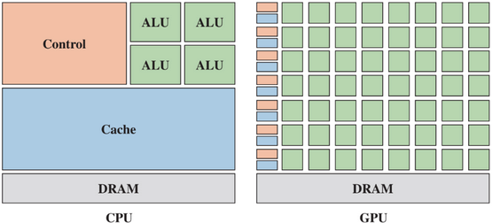

GPU
Graphics processing units, or GPUs, were originally designed to perform the rendering to provide a 3D visual effect on a 2D screen or monitor. This also include adding texturing and shading effects and involves a considerable amount of mathematical computation with a high degree of parallel processing to achieve this. Before the invention of GPU, computer graphic processing operations were performed by CPU (Central Processing Unit). The GPU and CPU architectures varied a lot to achieve different goals.
The first obvious difference is the amount of available ALUs: where a CPU typically has a small number of physical cores, the GPU has thousands. Conversely, where the GPU only dedicates a small portion to L2 caching, the CPU ads proportionately very lage amounts of cache. Finally, CPUs tend to have very comple control logic circuity.
GPUs are designed for parallel computing
A CPU is optimized for serial processing.
A GPU is very different in architecture from a CPU, even a multicore CPU. GPU are 50-100 times faster in tasks that require multiple parallel processes, such as computer graphics and gaming. But their most significant value lies in their ability to conuct massive loads of iterative computations in machine learning, deep learning, and bid data analytics.
Traditionally, 3D graphics workloads were all about vector operations and to some extent they still are:
Rendering 3D scenes require certain linear transformations of geometric attributes like position, normal, and texture coordinates which involves vector-matrix multiplications which themselves comprise of multiple vector-vector operations (dot products) often performed on 4-component vectors representing homogeneous coordinates;
Determining the color of individual vertices and/or pixels usually involves complex lighting calculations which themselves usually comprise of 3- or 4-component vector operations where the vectors represent colors (in RGB or RGBA format) or directions like the surface normal, incoming light direction, reflection direction, etc.
It is thus no surprise that GPUs used SIMD units since the early days to implement vector instructions. It is also not a coincidence that the first programmable shaders used assembly-like shading languages providing instructions operating on 4-component vectors.
SIMD stands for single instruction, multiple data, as opposed to SISD, i.e. single instruction, single data corresponding to the traditional von Neumann architecture. It is a parallel processing technique exploiting data-level parallelism by performing a single operation across multiple data elements simultaneously.